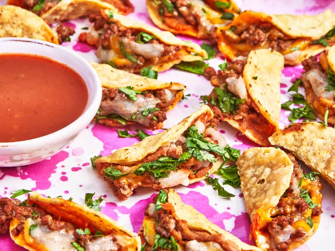

Beef and Bean Tiny Tacos

Description
These beef and bean tiny tacos are made with round corn chips, filled and folded around taco-seasoned beef and refried beans, a super fun party snack.
Ingredients
- 1 pound ground beef
- 1 packet taco seasoning
- 1/2 cup water
- 48 round corn tortilla chips, from 1 (11 ounce) bag
- 1 (14 ounce) can refried beans
- 8 ounces shredded Mexican blend cheese
- 1/4 cup finely chopped cilantro
- 1/4 cup taco sauce for dipping, or as needed
Directions
- Preheat the oven to 350 degrees F (175 degrees C).
- Heat a large skillet over medium-high heat. Add beef and cook while crumbling with a spatula and stirring occasionally until browned, about 5 minutes. Add taco seasoning and water and stir, using a wooden spoon to scrape up any browned bits from the bottom. Cook, stirring occasionally, until meat is well coated in seasoning. Remove from heat and set aside.
- Arrange whole chips on the bottom of 2 rimmed baking sheets. Spread each chip evenly with a thin layer of refried beans. Top evenly with taco meat and cheese.
- Bake in the preheated oven until cheese is melted, 5 to 7 minutes.
- As soon as chips are baked, carefully fold each chip in half to form a taco shape. Place tacos on a serving platter with taco sauce for dipping.